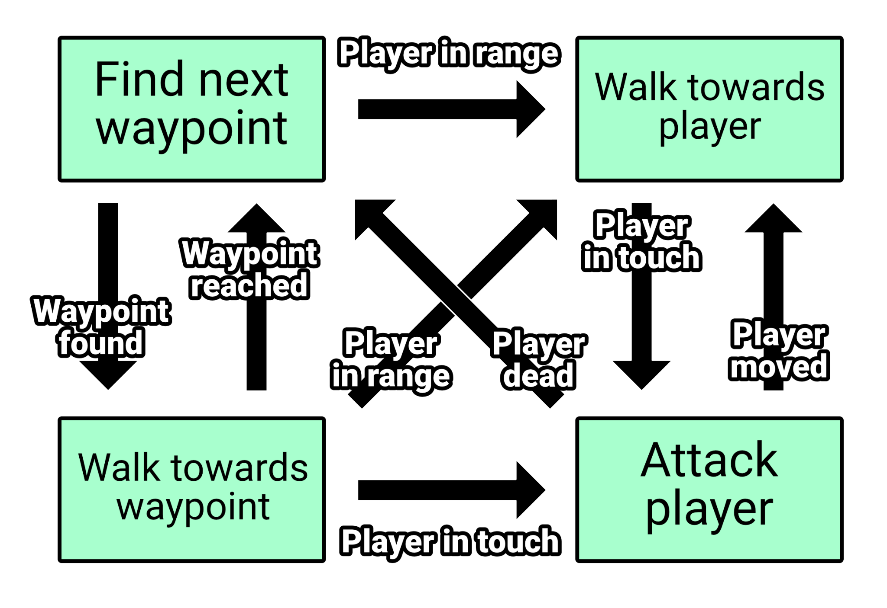
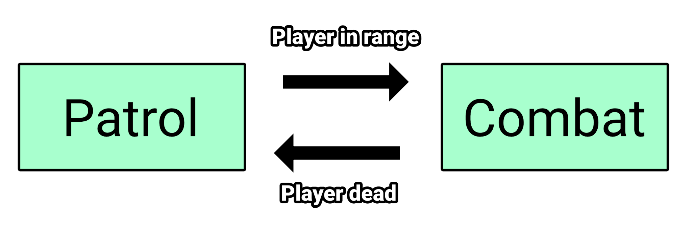
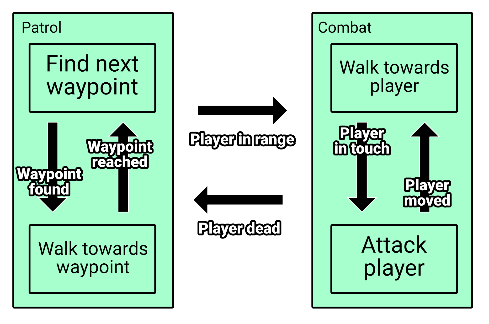
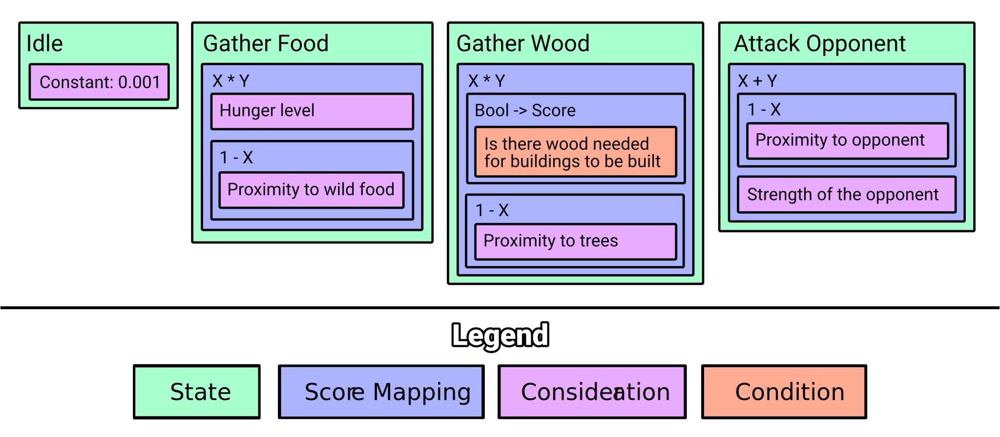

Introduction
The goal of this book is to introduce readers to wonders of game AI development, explaining how certain AI techniques work, which of them are best suited for what usecases and more than everything: to show that AI for games only sounds intimidating and in reality we all have born with intuition on how to build AI systems for games.
Although we will cover many AI techniques used in industry, we will be focusing mostly on ones that lead to producing emergent gameplay, a branch of games AI that is getting more and more popular.
Also note that while this book is gonna explain AI techniques for games, all examples and demos will be written in Rust programming language, and sometimes they will be using emergent crate.
First steps
First of all: what do we mean by the term AI?
When we talk about AI for games, we are in fact talking about all decision making units of logic.
It's improtant to understand that decision making, or AI, isn't suited only for agents in the game - it can be and already is widely used for animation systems, events happening in game world, or even to control sounds and music.
You are probably already making an AI system without even noticing it right now!
For a moment let's try to write a simple enemy wandering code the way we usually do.
#![allow(unused)] fn main() { enum Direction { Up, Down, Left, Right, } impl Direction { fn horizontal(&self) -> isize { match self { Self::Left => -1, Self::Right => 1, _ => 0, } } fn vertical(&self) -> isize { match self { Self::Up => -1, Self::Down => 1, _ => 0, } } fn next(&self) -> Self { match self { Self::Up => Self::Right, Self::Down => Self::Left, Self::Left => Self::Up, Self::Right => Self::Down, } } } struct Enemy { position: (isize, isize), direction: Direction, change_direction_turns: usize, wait_turns: usize, } impl Enemy { fn new(x: isize, y: isize) -> Self { Self { position: (x, y), direction: Direction::Up, change_direction_turns: 0, wait_turns: 0, } } fn update(&mut self) { if self.wait_turns > 0 { self.wait_turns -= 1; } else if self.change_direction_turns > 0 { self.change_direction_turns -= 1; self.position.0 += self.direction.horizontal(); self.position.1 += self.direction.vertical(); } else { self.direction = self.direction.next(); self.change_direction_turns = 4; self.wait_turns = 2; } } } }
You can notice update function - this is what controls this enemy simple AI.
You might not have noticed it but you have used Finite State Machine for this
problem, hardcore way thought.
Btw. That snippet was really hard to read, right? Yeah, that's how our naive "simple" AI implementations usually end up growing in complexity.
We can do better, let me refactor it to prove it to you:
#![allow(unused)] fn main() { enum Direction { Up, Down, Left, Right, } impl Direction { fn horizontal(&self) -> isize { match self { Self::Left => -1, Self::Right => 1, _ => 0, } } fn vertical(&self) -> isize { match self { Self::Up => -1, Self::Down => 1, _ => 0, } } fn next(&self) -> Self { match self { Self::Up => Self::Right, Self::Down => Self::Left, Self::Left => Self::Up, Self::Right => Self::Down, } } } enum State { Wait(usize), ChangeDirection, Move(usize), } struct Enemy { position: (isize, isize), direction: Direction, state: State, } impl Enemy { fn new(x: isize, y: isize) -> Self { Self { position: (x, y), direction: Direction::Up, state: State::ChangeDirection, } } fn update(&mut self) { match &mut self.state { State::Wait(turns) => { if *turns > 0 { *turns -= 1; } else { self.state = State::ChangeDirection; } }, State::ChangeDirection => { self.direction = self.direction.next(); self.state = State::Move(4); }, State::Move(turns) => { if *turns > 0 { *turns -= 1; self.position.0 += self.direction.horizontal(); self.position.1 += self.direction.vertical(); } else { self.state = State::Wait(2); } }, } } } }
Now we can clearly see what is the actual behavior of this AI:
- wait few turns
- change direction
- move forward for few turns
And we have got rid of a bug where our previous magic didn't actually do what we aimed for the way we wanted it to do. This is the simplest state machine we have learned to make, most likely at this point you're already making them this way.
Now imagine we get more states to handle, like shooting, taking cover when on low health, finding ammo when it ends - number of state changes and branching grows exponentially with number of states and our code starts to look more like a spaghetti than code with clear and easily understandable intent. Have you encountered that frustration yet?
This is the exact reason why AI systems have been invented in first place - to simplify readability of and iteration over AI logic.
In next chapters we will learn about AI systems and gradually work our way out from naive AI logic to more managable solutions.
Decision makers
In previous chapter we have seen use of the FSM (Finite State Machines). FSM is just one of many AI engines called decision makers (a.k.a. AI systems).
Decision makers only job is to do what their name suggest - make a decision about what agent should do. They usually contain a set of states/actions with rules to possible transitions, what differentiate one from another is how these transitions are resolved.
In next chapters we will take a look at decision makers used in the industry and explain how they work, what are their pros and cons and what to use them for.
Finite State Machine
When starting the journey with AI systems, Finite State Machines (FSM in short from now on) are always the first choice for AI system for a reason - they are the simplest to implement and the most intuitive decision making engines ever invented.
Here, take a look at the states and transitions of our simple enemy behavior:

Each block is a state that enemy can be in and every arrow is a transition with condition that has to be met to allow for transition to happen. Here in our case there are simple, single transitions pointing from one state to another, but in more complex behaviors there can be infinite number of transitions.
Decision making for FSM has a really simple rule applied to it:
When decision about state change has to be made, FSM goes through all transitions that starts from active state and validates their conditions, first one that succeeds triggers change from active state to one that transition points to.
How it works
Imagine we start from Change Direction state and we tell FSM to make a decision, it looks at transitions pointing from this state, here there is only one: Move wit condition: Just Do It (which here it means: it always succeeds). Since this tansition condition succeeded, FMS changes its active state to Move state and enemy moves forward for few turns in the direction previously set by Change Direction state.
In the mean time we run decision making from time to time (can be each frame, can be each second - usually decision making runs at slower frequency than game frames, or sometimes it is triggered only when decision making engine receives an event that tells that important change in game state happened and FSM should make a decision about its new state).
At some point when FSM runs its decision making, goes through Move state transitions and finds out that condition of a transition pointing to Wait state reports no more move turns, so FSM changes its active state to Wait which will wait few turns doing nothing.
When there is no more waiting turns left, FSM switches back to Change Direction state, which all of it makes "Change Direction, Move, Wait" behavior of our Enemy. Really simple, right?
How to implement
In chapter First steps we have shown the easiest FSM implementation using enums but the downside of that approach is that when number of states gets bigger, and number of possible state changes grow with them, we will eventually end up with spaghetti of state changes put all over the place with no clear way to see all the states and their transitions in one place. That slows down understanding of states and relations between them, but we can simplify that even further by making an easy, modular FSM engine.
I'll show you two ways that FSM are implemented: dummy way and better way.
The dummy way
Dummy way of implementing FSM works like this: There is a State trait that will
be implemented for all states. This state has update method with context to
read from / write to and it returns optional state ID. We do this bc we want
states to do their work and that state might tells FSM to change into new state
after FSM updates this state.
#![allow(unused)] fn main() { use std::{collections::HashMap, hash::Hash}; trait State<K, T> { // FSM runs this method only on curently active state, and after the update it // tries to change active state to whatever state ID we return here (None means // no change expected). fn update(&mut self, context: &mut T) -> Option<K>; } struct FSM<K, T> { states: HashMap<K, Box<dyn State<K, T>>>, active_state: K, } impl<K: Hash + Eq, T> FSM<K, T> { fn new(active_state: K) -> Self { Self { states: Default::default(), active_state, } } fn state<S: State<K, T> + 'static>(mut self, id: K, state: S) -> Self { self.states.insert(id, Box::new(state)); self } fn set_active_state(&mut self, id: K) { if self.states.contains_key(&id) { self.active_state = id; } } fn update(&mut self, context: &mut T) { if let Some(state) = self.states.get_mut(&self.active_state) { if let Some(id) = state.update(context) { self.set_active_state(id); } } } } }
This might looks like the solution used in First steps but with extra steps in form of states as trait objects. Yes, you're right, so what's the goal of that? The goal is that with this approach we are able to "easly" iterate on states, quickly add new ones or remove ones we do not need anymore and all that FSM setup stay in one place and we have almost completely decoupled states one from another. Why did i said "almost completely decoupled"? Well, we still have hardcoded states IDs of transitions in state logic, that's not ok, we will fix that when we will do the better way of implementing FSM later, for now let's see how do we use FSM system we have created.
Let's start with implementing enemy states:
#![allow(unused)] fn main() { trait State<K, T> { fn update(&mut self, context: &mut T) -> Option<K>; } enum Direction { Up, Down, Left, Right, } impl Direction { fn horizontal(&self) -> isize { match self { Self::Left => -1, Self::Right => 1, _ => 0, } } fn vertical(&self) -> isize { match self { Self::Up => -1, Self::Down => 1, _ => 0, } } fn next(&self) -> Self { match self { Self::Up => Self::Right, Self::Down => Self::Left, Self::Left => Self::Up, Self::Right => Self::Down, } } } // This enum will be used as key for states. #[derive(Hash, PartialEq, Eq)] enum EnemyState { Wait, Move, ChangeDirection, } // And this struct will hold all enemy data used by the states. // It will be passed to FSM as context. struct EnemyData { position: (isize, isize), direction: Direction, } // It holds number of waiting turns. struct EnemyWaitState(pub usize); impl State<EnemyState, EnemyData> for EnemyWaitState { fn update(&mut self, context: &mut EnemyData) -> Option<EnemyState> { if self.0 > 0 { self.0 -= 1; None } else { Some(EnemyState::ChangeDirection) } } } // It holds number of moving turns. struct EnemyMoveState(pub usize); impl State<EnemyState, EnemyData> for EnemyMoveState { fn update(&mut self, context: &mut EnemyData) -> Option<EnemyState> { if self.0 > 0 { self.0 -= 1; context.position.0 += context.direction.horizontal(); context.position.1 += context.direction.vertical(); None } else { Some(EnemyState::Wait) } } } struct EnemyChangeDirectionState; impl State<EnemyState, EnemyData> for EnemyChangeDirectionState { fn update(&mut self, context: &mut EnemyData) -> Option<EnemyState> { context.direction = context.direction.next(); Some(EnemyState::Move) } } }
Although code size has grown comparing to implementation used in First steps, we have modularized states. That would get useful when for example we would have many different NPC types using same context type to store their data and by that we would share same states across multiple AI agent types - we would reduce duplication of the logic and would allow for quick adding/removing possible states for certain types of NPCs, sadly we don't show that here.
Now let's take a look at our enemy type setup:
#![allow(unused)] fn main() { use std::{collections::HashMap, hash::Hash}; trait State<K, T> { fn update(&mut self, context: &mut T) -> Option<K>; } struct FSM<K, T> { states: HashMap<K, Box<dyn State<K, T>>>, active_state: K, } impl<K: Hash + Eq, T> FSM<K, T> { fn new(active_state: K) -> Self { Self { states: Default::default(), active_state, } } fn state<S: State<K, T> + 'static>(mut self, id: K, state: S) -> Self { self.states.insert(id, Box::new(state)); self } fn set_active_state(&mut self, id: K) { if self.states.contains_key(&id) { self.active_state = id; } } fn update(&mut self, context: &mut T) { if let Some(state) = self.states.get_mut(&self.active_state) { if let Some(id) = state.update(context) { self.set_active_state(id); } } } } #[derive(Debug, PartialEq, Eq)] enum Direction { Up, Down, Left, Right, } impl Direction { fn horizontal(&self) -> isize { match self { Self::Left => -1, Self::Right => 1, _ => 0, } } fn vertical(&self) -> isize { match self { Self::Up => -1, Self::Down => 1, _ => 0, } } fn next(&self) -> Self { match self { Self::Up => Self::Right, Self::Down => Self::Left, Self::Left => Self::Up, Self::Right => Self::Down, } } } #[derive(Debug, Hash, PartialEq, Eq)] enum EnemyState { Wait, Move, ChangeDirection, } struct EnemyData { position: (isize, isize), direction: Direction, } struct EnemyWaitState(pub usize); impl State<EnemyState, EnemyData> for EnemyWaitState { fn update(&mut self, context: &mut EnemyData) -> Option<EnemyState> { if self.0 > 0 { self.0 -= 1; None } else { Some(EnemyState::ChangeDirection) } } } struct EnemyMoveState(pub usize); impl State<EnemyState, EnemyData> for EnemyMoveState { fn update(&mut self, context: &mut EnemyData) -> Option<EnemyState> { if self.0 > 0 { self.0 -= 1; context.position.0 += context.direction.horizontal(); context.position.1 += context.direction.vertical(); None } else { Some(EnemyState::Wait) } } } struct EnemyChangeDirectionState; impl State<EnemyState, EnemyData> for EnemyChangeDirectionState { fn update(&mut self, context: &mut EnemyData) -> Option<EnemyState> { context.direction = context.direction.next(); Some(EnemyState::Move) } } // We are using composition of FSM and enemy data to please the borrow checker // and allow FSM to mutate enemy data on update. struct Enemy { data: EnemyData, fsm: FSM<EnemyState, EnemyData>, } impl Enemy { fn new(x: isize, y: isize, direction: Direction) -> Self { let mut data = EnemyData { position: (x, y), direction, }; let mut fsm = FSM::new(EnemyState::ChangeDirection) .state(EnemyState::Wait, EnemyWaitState(1)) .state(EnemyState::ChangeDirection, EnemyChangeDirectionState) .state(EnemyState::Move, EnemyMoveState(2)); Self { data, fsm } } fn update(&mut self) { self.fsm.update(&mut self.data); } } }
You can see now that because we have modularized states, whenever we would want to create new state we create a state object then apply it to whatever FSM engine we want without digging through all the code to adapt AI agent to use of new state - we have simplified behavior development and reduced the time needed for implementing changes to the AI. Modularity is the key to easier development when complexity of the AI scales up.
And here are tests that show how enemy state changes in time (look how state
changes after every update method call):
#![allow(unused)] fn main() { use std::{collections::HashMap, hash::Hash}; trait State<K, T> { fn update(&mut self, context: &mut T) -> Option<K>; } struct FSM<K, T> { states: HashMap<K, Box<dyn State<K, T>>>, active_state: K, } impl<K: Hash + Eq, T> FSM<K, T> { fn new(active_state: K) -> Self { Self { states: Default::default(), active_state, } } fn state<S: State<K, T> + 'static>(mut self, id: K, state: S) -> Self { self.states.insert(id, Box::new(state)); self } fn set_active_state(&mut self, id: K) { if self.states.contains_key(&id) { self.active_state = id; } } fn update(&mut self, context: &mut T) { if let Some(state) = self.states.get_mut(&self.active_state) { if let Some(id) = state.update(context) { self.set_active_state(id); } } } } #[derive(Debug, PartialEq, Eq)] enum Direction { Up, Down, Left, Right, } impl Direction { fn horizontal(&self) -> isize { match self { Self::Left => -1, Self::Right => 1, _ => 0, } } fn vertical(&self) -> isize { match self { Self::Up => -1, Self::Down => 1, _ => 0, } } fn next(&self) -> Self { match self { Self::Up => Self::Right, Self::Down => Self::Left, Self::Left => Self::Up, Self::Right => Self::Down, } } } #[derive(Debug, Hash, PartialEq, Eq)] enum EnemyState { Wait, Move, ChangeDirection, } struct EnemyData { position: (isize, isize), direction: Direction, } struct EnemyWaitState(pub usize); impl State<EnemyState, EnemyData> for EnemyWaitState { fn update(&mut self, context: &mut EnemyData) -> Option<EnemyState> { if self.0 > 0 { self.0 -= 1; None } else { Some(EnemyState::ChangeDirection) } } } struct EnemyMoveState(pub usize); impl State<EnemyState, EnemyData> for EnemyMoveState { fn update(&mut self, context: &mut EnemyData) -> Option<EnemyState> { if self.0 > 0 { self.0 -= 1; context.position.0 += context.direction.horizontal(); context.position.1 += context.direction.vertical(); None } else { Some(EnemyState::Wait) } } } struct EnemyChangeDirectionState; impl State<EnemyState, EnemyData> for EnemyChangeDirectionState { fn update(&mut self, context: &mut EnemyData) -> Option<EnemyState> { context.direction = context.direction.next(); Some(EnemyState::Move) } } struct Enemy { data: EnemyData, fsm: FSM<EnemyState, EnemyData>, } impl Enemy { fn new(x: isize, y: isize, direction: Direction) -> Self { let mut data = EnemyData { position: (x, y), direction, }; let mut fsm = FSM::new(EnemyState::ChangeDirection) .state(EnemyState::Wait, EnemyWaitState(1)) .state(EnemyState::ChangeDirection, EnemyChangeDirectionState) .state(EnemyState::Move, EnemyMoveState(2)); Self { data, fsm } } fn update(&mut self) { self.fsm.update(&mut self.data); } } let mut enemy = Enemy::new(0, 0, Direction::Up); assert_eq!(enemy.fsm.active_state, EnemyState::ChangeDirection); assert_eq!(enemy.data.position.0, 0); assert_eq!(enemy.data.position.1, 0); assert_eq!(enemy.data.direction, Direction::Up); for i in 0..3 { enemy.update(); assert_eq!(enemy.fsm.active_state, EnemyState::Move); assert_eq!(enemy.data.position.0, i); assert_eq!(enemy.data.position.1, 0); assert_eq!(enemy.data.direction, Direction::Right); } for _ in 0..2 { enemy.update(); assert_eq!(enemy.fsm.active_state, EnemyState::Wait); assert_eq!(enemy.data.position.0, 2); assert_eq!(enemy.data.position.1, 0); assert_eq!(enemy.data.direction, Direction::Right); } enemy.update(); assert_eq!(enemy.fsm.active_state, EnemyState::ChangeDirection); assert_eq!(enemy.data.position.0, 2); assert_eq!(enemy.data.position.1, 0); assert_eq!(enemy.data.direction, Direction::Right); }
Now, do you remember we have been talking about "almost completely decoupled states"? While the downside of this approach to decision making by returning the ID of state to change into, we can avoid that and actually completely decouple states from one another if we implement FSM the better way.
The better way
Our goal is to decouple states from one another completely, to do that we have to find out how states are coupled right now - let's take a look at some state logic:
#![allow(unused)] fn main() { trait State<K, T> { fn update(&mut self, context: &mut T) -> Option<K>; } #[derive(Debug, PartialEq, Eq)] enum Direction { Up, Down, Left, Right, } impl Direction { fn horizontal(&self) -> isize { match self { Self::Left => -1, Self::Right => 1, _ => 0, } } fn vertical(&self) -> isize { match self { Self::Up => -1, Self::Down => 1, _ => 0, } } fn next(&self) -> Self { match self { Self::Up => Self::Right, Self::Down => Self::Left, Self::Left => Self::Up, Self::Right => Self::Down, } } } #[derive(Debug, Hash, PartialEq, Eq)] enum EnemyState { Wait, Move, ChangeDirection, } struct EnemyData { position: (isize, isize), direction: Direction, } struct EnemyMoveState(pub usize); impl State<EnemyState, EnemyData> for EnemyMoveState { fn update(&mut self, context: &mut EnemyData) -> Option<EnemyState> { if self.0 > 0 { self.0 -= 1; context.position.0 += context.direction.horizontal(); context.position.1 += context.direction.vertical(); None } else { Some(EnemyState::Wait) } } } }
You can see that state update method contains conditions that tell if we should change into new state and state logic itself (enemy movement).
What we can do with it is we can abstract conditions and state changes into separate code units and let states only perform their actual logic on update, also we add a state method to be called when state gets activated so it can setup context for that state updates:
#![allow(unused)] fn main() { type Condition<T> = fn(&T) -> bool; trait State<T> { fn activated(&mut self, context: &mut T) {} fn update(&mut self, context: &mut T) {} } }
Since we did that we also have to introduce new FSM transition and state types. FSM state will now hold the actual state object and list of all possible transitions, it will also be able to decide if FSM should change into new state by testing each transition condition and first one that passes, its state ID gets returned and FSM will then activate that state:
#![allow(unused)] fn main() { type Condition<T> = fn(&T) -> bool; trait State<T> { fn activated(&mut self, context: &mut T) {} fn update(&mut self, context: &mut T) {} } struct FSMTransition<K, T> { to: K, condition: Condition<T>, } struct FSMState<K, T> { state: Box<dyn State<T>>, transitions: Vec<FSMTransition<K, T>>, } impl<K, T> FSMState<K, T> { fn new<S: State<T> + 'static>(state: S) -> Self { Self { state: Box::new(state), transitions: vec![], } } fn transition(mut self, to: K, condition: Condition<T>) -> Self { self.transitions.push(FSMTransition {to, condition}); self } fn decide(&self, context: &T) -> Option<K> where K: Clone { for transition in &self.transitions { if (transition.condition)(context) { return Some(transition.to.clone()); } } None } } }
Now what's left is to adapt FSM to work with new states and transitions:
#![allow(unused)] fn main() { use std::{collections::HashMap, hash::Hash}; #[derive(Debug, Copy, Clone, PartialEq, Eq)] enum Direction { Up, Down, Left, Right, } impl Direction { fn horizontal(&self) -> isize { match self { Self::Left => -1, Self::Right => 1, _ => 0, } } fn vertical(&self) -> isize { match self { Self::Up => -1, Self::Down => 1, _ => 0, } } fn next(&self) -> Self { match self { Self::Up => Self::Right, Self::Down => Self::Left, Self::Left => Self::Up, Self::Right => Self::Down, } } } type Condition<T> = fn(&T) -> bool; trait State<T> { fn activated(&mut self, context: &mut T) {} fn update(&mut self, context: &mut T) {} } struct FSMTransition<K, T> { to: K, condition: Condition<T>, } struct FSMState<K, T> { state: Box<dyn State<T>>, transitions: Vec<FSMTransition<K, T>>, } impl<K, T> FSMState<K, T> { fn new<S: State<T> + 'static>(state: S) -> Self { Self { state: Box::new(state), transitions: vec![], } } fn transition(mut self, to: K, condition: Condition<T>) -> Self { self.transitions.push(FSMTransition {to, condition}); self } fn decide(&self, context: &T) -> Option<K> where K: Clone { for transition in &self.transitions { if (transition.condition)(context) { return Some(transition.to.clone()); } } None } } struct FSM<K, T> { states: HashMap<K, FSMState<K, T>>, active_state: K, } impl<K: Hash + Eq, T> FSM<K, T> { fn new(active_state: K) -> Self { Self { states: Default::default(), active_state, } } fn state(mut self, id: K, state: FSMState<K, T>) -> Self { self.states.insert(id, state); self } fn set_active_state(&mut self, id: K, context: &mut T) { if let Some(state) = self.states.get_mut(&id) { state.state.activated(context); self.active_state = id; } } fn decide(&mut self, context: &mut T) where K: Clone { if let Some(state) = self.states.get(&self.active_state) { if let Some(id) = state.decide(context) { self.set_active_state(id, context); } } } fn update(&mut self, context: &mut T) { if let Some(state) = self.states.get_mut(&self.active_state) { state.state.update(context); } } } }
We have separated previous version of update method into two methods, one for
deciding on what state FSM should change into, and another to actually update
active state.
We could still keep them together but it's good to make methods do only the job
they describe - that will allow user to for example run decision making at lower
frequency than the states update (for the sake of this tutorial we will call
them together in enemy tick method just for the sake of smplification).
When it comes to the enemy code itself, not much have changed except FSM setup and enemy data type:
#![allow(unused)] fn main() { use std::{collections::HashMap, hash::Hash}; #[derive(Debug, Copy, Clone, PartialEq, Eq)] enum Direction { Up, Down, Left, Right, } impl Direction { fn horizontal(&self) -> isize { match self { Self::Left => -1, Self::Right => 1, _ => 0, } } fn vertical(&self) -> isize { match self { Self::Up => -1, Self::Down => 1, _ => 0, } } fn next(&self) -> Self { match self { Self::Up => Self::Right, Self::Down => Self::Left, Self::Left => Self::Up, Self::Right => Self::Down, } } } type Condition<T> = fn(&T) -> bool; trait State<T> { fn activated(&mut self, context: &mut T) {} fn update(&mut self, context: &mut T) {} } struct FSMTransition<K, T> { to: K, condition: Condition<T>, } struct FSMState<K, T> { state: Box<dyn State<T>>, transitions: Vec<FSMTransition<K, T>>, } impl<K, T> FSMState<K, T> { fn new<S: State<T> + 'static>(state: S) -> Self { Self { state: Box::new(state), transitions: vec![], } } fn transition(mut self, to: K, condition: Condition<T>) -> Self { self.transitions.push(FSMTransition {to, condition}); self } fn decide(&self, context: &T) -> Option<K> where K: Clone { for transition in &self.transitions { if (transition.condition)(context) { return Some(transition.to.clone()); } } None } } struct FSM<K, T> { states: HashMap<K, FSMState<K, T>>, active_state: K, } impl<K: Hash + Eq, T> FSM<K, T> { fn new(active_state: K) -> Self { Self { states: Default::default(), active_state, } } fn state(mut self, id: K, state: FSMState<K, T>) -> Self { self.states.insert(id, state); self } fn set_active_state(&mut self, id: K, context: &mut T) { if let Some(state) = self.states.get_mut(&id) { state.state.activated(context); self.active_state = id; } } fn decide(&mut self, context: &mut T) where K: Clone { if let Some(state) = self.states.get(&self.active_state) { if let Some(id) = state.decide(context) { self.set_active_state(id, context); } } } fn update(&mut self, context: &mut T) { if let Some(state) = self.states.get_mut(&self.active_state) { state.state.update(context); } } } #[derive(Debug, Copy, Clone, Hash, PartialEq, Eq)] enum EnemyState { Wait, Move, ChangeDirection, } struct EnemyWaitState(pub usize); impl State<EnemyData> for EnemyWaitState {} struct EnemyMoveState(pub usize); impl State<EnemyData> for EnemyMoveState {} struct EnemyChangeDirectionState; impl State<EnemyData> for EnemyChangeDirectionState {} struct EnemyData { position: (isize, isize), direction: Direction, // From not on we will keep track of remainding turns in the enemy data. // The reason for that is that all states that performs as long as there are // turns left, also you might have noticed that in previous versions of states, // as long as first cycle ends, all states doesn't wait for any turn because // we have zeroed their turn counters, which wasn't what we aimed for in the // first place. Now whenever state gets activated, it will set this counter // with value from its definition. turns: usize, } struct Enemy { data: EnemyData, fsm: FSM<EnemyState, EnemyData>, } impl Enemy { fn new(x: isize, y: isize, direction: Direction) -> Self { let mut data = EnemyData { position: (x, y), direction, turns: 0, }; let fsm = FSM::new(EnemyState::ChangeDirection) .state( EnemyState::Wait, FSMState::new(EnemyWaitState(1)) .transition(EnemyState::ChangeDirection, |data| data.turns == 0), ) .state( EnemyState::Move, FSMState::new(EnemyMoveState(2)) .transition(EnemyState::Wait, |data| data.turns == 0), ) .state( EnemyState::ChangeDirection, FSMState::new(EnemyChangeDirectionState) .transition(EnemyState::Move, |_| true), ); Self { data, fsm } } fn tick(&mut self) { // For the simplicity we just perform decision making and update at once, // but you should be encouraged to call decision making only when it's needed, // or at least at lower frequency than update, because most of the times, if // not always, state changes are rare. self.fsm.decide(&mut self.data); self.fsm.update(&mut self.data); } } }
And now our states are completely decoupled from one another, they only do their job and don't care about any state transitions, making it super easy to just setup and modify all states and changes at the time when we create FSM:
#![allow(unused)] fn main() { use std::{collections::HashMap, hash::Hash}; #[derive(Debug, Copy, Clone, PartialEq, Eq)] enum Direction { Up, Down, Left, Right, } impl Direction { fn horizontal(&self) -> isize { match self { Self::Left => -1, Self::Right => 1, _ => 0, } } fn vertical(&self) -> isize { match self { Self::Up => -1, Self::Down => 1, _ => 0, } } fn next(&self) -> Self { match self { Self::Up => Self::Right, Self::Down => Self::Left, Self::Left => Self::Up, Self::Right => Self::Down, } } } type Condition<T> = fn(&T) -> bool; trait State<T> { fn activated(&mut self, context: &mut T) {} fn update(&mut self, context: &mut T) {} } struct FSMTransition<K, T> { to: K, condition: Condition<T>, } struct FSMState<K, T> { state: Box<dyn State<T>>, transitions: Vec<FSMTransition<K, T>>, } impl<K, T> FSMState<K, T> { fn new<S: State<T> + 'static>(state: S) -> Self { Self { state: Box::new(state), transitions: vec![], } } fn transition(mut self, to: K, condition: Condition<T>) -> Self { self.transitions.push(FSMTransition {to, condition}); self } fn decide(&self, context: &T) -> Option<K> where K: Clone { for transition in &self.transitions { if (transition.condition)(context) { return Some(transition.to.clone()); } } None } } struct FSM<K, T> { states: HashMap<K, FSMState<K, T>>, active_state: K, } impl<K: Hash + Eq, T> FSM<K, T> { fn new(active_state: K) -> Self { Self { states: Default::default(), active_state, } } fn state(mut self, id: K, state: FSMState<K, T>) -> Self { self.states.insert(id, state); self } fn set_active_state(&mut self, id: K, context: &mut T) { if let Some(state) = self.states.get_mut(&id) { state.state.activated(context); self.active_state = id; } } fn decide(&mut self, context: &mut T) where K: Clone { if let Some(state) = self.states.get(&self.active_state) { if let Some(id) = state.decide(context) { self.set_active_state(id, context); } } } fn update(&mut self, context: &mut T) { if let Some(state) = self.states.get_mut(&self.active_state) { state.state.update(context); } } } #[derive(Debug, Copy, Clone, Hash, PartialEq, Eq)] enum EnemyState { Wait, Move, ChangeDirection, } struct EnemyData { position: (isize, isize), direction: Direction, turns: usize, } struct EnemyWaitState(pub usize); impl State<EnemyData> for EnemyWaitState { fn activated(&mut self, context: &mut EnemyData) { context.turns = self.0; } fn update(&mut self, context: &mut EnemyData) { context.turns = context.turns.max(1) - 1; } } struct EnemyMoveState(pub usize); impl State<EnemyData> for EnemyMoveState { fn activated(&mut self, context: &mut EnemyData) { context.turns = self.0; } fn update(&mut self, context: &mut EnemyData) { if context.turns > 0 { context.turns -= 1; context.position.0 += context.direction.horizontal(); context.position.1 += context.direction.vertical(); } } } struct EnemyChangeDirectionState; impl State<EnemyData> for EnemyChangeDirectionState { fn activated(&mut self, context: &mut EnemyData) { context.direction = context.direction.next(); } } }
What's left is to look at how our new better FSM mutates its enemy data in time:
#![allow(unused)] fn main() { use std::{collections::HashMap, hash::Hash}; #[derive(Debug, Copy, Clone, PartialEq, Eq)] enum Direction { Up, Down, Left, Right, } impl Direction { fn horizontal(&self) -> isize { match self { Self::Left => -1, Self::Right => 1, _ => 0, } } fn vertical(&self) -> isize { match self { Self::Up => -1, Self::Down => 1, _ => 0, } } fn next(&self) -> Self { match self { Self::Up => Self::Right, Self::Down => Self::Left, Self::Left => Self::Up, Self::Right => Self::Down, } } } type Condition<T> = fn(&T) -> bool; trait State<T> { fn activated(&mut self, context: &mut T) {} fn update(&mut self, context: &mut T) {} } struct FSMTransition<K, T> { to: K, condition: Condition<T>, } struct FSMState<K, T> { state: Box<dyn State<T>>, transitions: Vec<FSMTransition<K, T>>, } impl<K, T> FSMState<K, T> { fn new<S: State<T> + 'static>(state: S) -> Self { Self { state: Box::new(state), transitions: vec![], } } fn transition(mut self, to: K, condition: Condition<T>) -> Self { self.transitions.push(FSMTransition {to, condition}); self } fn decide(&self, context: &T) -> Option<K> where K: Clone { for transition in &self.transitions { if (transition.condition)(context) { return Some(transition.to.clone()); } } None } } struct FSM<K, T> { states: HashMap<K, FSMState<K, T>>, active_state: K, } impl<K: Hash + Eq, T> FSM<K, T> { fn new(active_state: K) -> Self { Self { states: Default::default(), active_state, } } fn state(mut self, id: K, state: FSMState<K, T>) -> Self { self.states.insert(id, state); self } fn set_active_state(&mut self, id: K, context: &mut T) { if let Some(state) = self.states.get_mut(&id) { state.state.activated(context); self.active_state = id; } } fn decide(&mut self, context: &mut T) where K: Clone { if let Some(state) = self.states.get(&self.active_state) { if let Some(id) = state.decide(context) { self.set_active_state(id, context); } } } fn update(&mut self, context: &mut T) { if let Some(state) = self.states.get_mut(&self.active_state) { state.state.update(context); } } } #[derive(Debug, Copy, Clone, Hash, PartialEq, Eq)] enum EnemyState { Wait, Move, ChangeDirection, } struct EnemyData { position: (isize, isize), direction: Direction, turns: usize, } struct Enemy { data: EnemyData, fsm: FSM<EnemyState, EnemyData>, } impl Enemy { fn new(x: isize, y: isize, direction: Direction) -> Self { let mut data = EnemyData { position: (x, y), direction, turns: 0, }; let fsm = FSM::new(EnemyState::ChangeDirection) .state( EnemyState::Wait, FSMState::new(EnemyWaitState(1)) .transition(EnemyState::ChangeDirection, |data| data.turns == 0), ) .state( EnemyState::Move, FSMState::new(EnemyMoveState(2)) .transition(EnemyState::Wait, |data| data.turns == 0), ) .state( EnemyState::ChangeDirection, FSMState::new(EnemyChangeDirectionState) .transition(EnemyState::Move, |_| true), ); Self { data, fsm } } fn tick(&mut self) { self.fsm.decide(&mut self.data); self.fsm.update(&mut self.data); } } struct EnemyWaitState(pub usize); impl State<EnemyData> for EnemyWaitState { fn activated(&mut self, context: &mut EnemyData) { context.turns = self.0; } fn update(&mut self, context: &mut EnemyData) { context.turns = context.turns.max(1) - 1; } } struct EnemyMoveState(pub usize); impl State<EnemyData> for EnemyMoveState { fn activated(&mut self, context: &mut EnemyData) { context.turns = self.0; } fn update(&mut self, context: &mut EnemyData) { if context.turns > 0 { context.turns -= 1; context.position.0 += context.direction.horizontal(); context.position.1 += context.direction.vertical(); } } } struct EnemyChangeDirectionState; impl State<EnemyData> for EnemyChangeDirectionState { fn activated(&mut self, context: &mut EnemyData) { context.direction = context.direction.next(); } } let mut enemy = Enemy::new(0, 0, Direction::Up); enemy.tick(); assert_eq!(enemy.fsm.active_state, EnemyState::Move); assert_eq!(enemy.data.position.0, 0); assert_eq!(enemy.data.position.1, -1); assert_eq!(enemy.data.direction, Direction::Up); assert_eq!(enemy.data.turns, 1); enemy.tick(); assert_eq!(enemy.fsm.active_state, EnemyState::Move); assert_eq!(enemy.data.position.0, 0); assert_eq!(enemy.data.position.1, -2); assert_eq!(enemy.data.direction, Direction::Up); assert_eq!(enemy.data.turns, 0); enemy.tick(); assert_eq!(enemy.fsm.active_state, EnemyState::Wait); assert_eq!(enemy.data.position.0, 0); assert_eq!(enemy.data.position.1, -2); assert_eq!(enemy.data.direction, Direction::Up); assert_eq!(enemy.data.turns, 0); enemy.tick(); assert_eq!(enemy.fsm.active_state, EnemyState::ChangeDirection); assert_eq!(enemy.data.position.0, 0); assert_eq!(enemy.data.position.1, -2); assert_eq!(enemy.data.direction, Direction::Right); assert_eq!(enemy.data.turns, 0); }
What we have achieved by making FSM the better way:
- states are now units that do only their actual work.
- we have achieved complete decoupling of states by making FSM fully modular.
- if we want to create new state or remove existing one, the only place that we have to adapt is the FSM setup.
- if we want to add new transition or remove existing one, the only place that we have to adapt is the FSM setup, no state logic itself.
All of that modularization has reduced development time and complexity of iterations over AI behaviors, but it's important to warn you that FSM main downside is that usually number of transitions grows exponentially with number of states and you should consider using other decision making engines when you find yourself struggling with states and transitions when your FSM gets big enough.
Use of Machinery decision maker from emergent crate
If you would like to just use existing solution for FSM, consider trying
emergent crate and its Machinery decision making engine:
#![allow(unused)] fn main() { extern crate emergent; use emergent::prelude::*; use std::hash::Hash; #[derive(Debug, Copy, Clone, PartialEq, Eq)] enum Direction { Up, Down, Left, Right, } impl Direction { fn horizontal(&self) -> isize { match self { Self::Left => -1, Self::Right => 1, _ => 0, } } fn vertical(&self) -> isize { match self { Self::Up => -1, Self::Down => 1, _ => 0, } } fn next(&self) -> Self { match self { Self::Up => Self::Right, Self::Down => Self::Left, Self::Left => Self::Up, Self::Right => Self::Down, } } } #[derive(Debug, Copy, Clone, Hash, PartialEq, Eq)] enum EnemyState { Wait, Move, ChangeDirection, } struct EnemyData { position: (isize, isize), direction: Direction, turns: usize, } struct WaitTask(pub usize); // Tasks are units that do the actual work of the state. impl Task<EnemyData> for WaitTask { // While task is locked, FSM won't change to another state even if it can. // We lock this task for the time there are turns left. fn is_locked(&self, memory: &EnemyData) -> bool { memory.turns > 0 } fn on_enter(&mut self, memory: &mut EnemyData) { memory.turns = self.0; } fn on_update(&mut self, memory: &mut EnemyData) { memory.turns = memory.turns.max(1) - 1; } } struct MoveTask(pub usize); impl Task<EnemyData> for MoveTask { fn is_locked(&self, memory: &EnemyData) -> bool { memory.turns > 0 } fn on_enter(&mut self, memory: &mut EnemyData) { memory.turns = self.0; } fn on_update(&mut self, memory: &mut EnemyData) { if memory.turns > 0 { memory.turns -= 1; memory.position.0 += memory.direction.horizontal(); memory.position.1 += memory.direction.vertical(); } } } struct ChangeDirectionTask; impl Task<EnemyData> for ChangeDirectionTask { fn on_enter(&mut self, memory: &mut EnemyData) { memory.direction = memory.direction.next(); } } struct Enemy { data: EnemyData, machinery: Machinery<EnemyData, EnemyState>, } impl Enemy { fn new(x: isize, y: isize, direction: Direction) -> Self { let mut data = EnemyData { position: (x, y), direction, turns: 0, }; let mut machinery = MachineryBuilder::default() .state( EnemyState::Wait, MachineryState::task(WaitTask(1)) // In `emergent` Conditions are traits that are implemented also for // booleans, which means we can just use constants as conditions so // here we make this transition always passing and the state locking // controls how long task will run. .change(MachineryChange::new(EnemyState::ChangeDirection, true)), ) .state( EnemyState::Move, MachineryState::task(MoveTask(2)) .change(MachineryChange::new(EnemyState::Wait, true)), ) .state( EnemyState::ChangeDirection, MachineryState::task(ChangeDirectionTask) .change(MachineryChange::new(EnemyState::Move, true)), ) .build(); // Newly created decision makers doesn't have any state activated and since // FSM can change its states starting from active state, we need to activate // first state by ourself. machinery.change_active_state( Some(EnemyState::ChangeDirection), &mut data, true, ); Self { data, machinery } } fn tick(&mut self) { // `process` method performs decision making. self.machinery.process(&mut self.data); self.machinery.update(&mut self.data); } } let mut enemy = Enemy::new(0, 0, Direction::Up); assert_eq!(enemy.machinery.active_state(), Some(&EnemyState::ChangeDirection)); assert_eq!(enemy.data.position.0, 0); assert_eq!(enemy.data.position.1, 0); assert_eq!(enemy.data.direction, Direction::Right); for i in 1..3 { enemy.tick(); assert_eq!(enemy.machinery.active_state(), Some(&EnemyState::Move)); assert_eq!(enemy.data.position.0, i); assert_eq!(enemy.data.position.1, 0); assert_eq!(enemy.data.direction, Direction::Right); } enemy.tick(); assert_eq!(enemy.machinery.active_state(), Some(&EnemyState::Wait)); assert_eq!(enemy.data.position.0, 2); assert_eq!(enemy.data.position.1, 0); assert_eq!(enemy.data.direction, Direction::Right); enemy.tick(); assert_eq!(enemy.machinery.active_state(), Some(&EnemyState::ChangeDirection)); assert_eq!(enemy.data.position.0, 2); assert_eq!(enemy.data.position.1, 0); assert_eq!(enemy.data.direction, Direction::Down); }
Typical use cases
-
Simple deterministic AI behavior
Indie games with small number of AI agent states, usually platformers or fast-paced games like shooters or bullet hells - in general games that doesn't need long-term or strategic planning and they have to make decision fast to adapt to quickly changed environment.
-
Animations
All modern game engines use FSM to manage animations, transition between them also contains information about blending between states to not make states snap from one to another instantly.
-
Game states / game modes
Imagine you have a game session with several states: Overworld, Battle, Shop, Crafting. You might use FSM to manage changes between these different game modes.
Hierarchical Finite State Machine
In the chapter about FSM we have been talking about FSM being messy when number of states grows. The reason for that was that along with number of states, number of transitions grow exponentially, which at the point of having for example 20 different states, behavior is starting to get messy and unmanagable - for that exact problem Hierarchical Finite State Machines (HFSM for short from now on) has got invented.
Let's take a look at some more complex FSM than what we have made in FSM chapter:

Number of transitions got higher and we can see that many transitions targets same state using same condition.
When we analyze this network we can find that there are two distinct super-states: Patrol and Combat:

And each of these states contains their own network of sub-states:

And this is hierarchical approach to FSM:
HFSM has the same rules for transitions as FSM, what's new is that you can use other FSM networks as states. Whenever FSM network, used as state in another FSM, gets activated, it will reset its active state to initial one.
How it works
Rememeber that HFSM is just a FSM that can use other FSM objects as states, hence hierarchy in the name - we compose networks in other networks.
We have a hierarchy of states that looks like this:
- Patrol
- Find Next Waypoint
- Walk Towards Waypoint
- Combat
- Walk towards player
- Attack player
Each network layer doesn't know anything about other networks, they are fully encapsulated. We start at first network layer which has Patrol and Combat states and start with Patrol state active, it gets activated and we start executing Patrol network which has Find Next Waypoint state (we start here) and Walk Towards Waypoint state. We have found waypoint so we switch to Walk Towards Waypoint state. Notice that while we are executing Patrol network we are still executing root network too, which means at any time we can get player in range condition succeed and we switch at root level to Combat network, then there it starts at Walk Towards Player, it reaches the player, switches to Attack Player, makes player dead and root network switches back to Patrol network, its Find Next Waypoint gets activated it cycles between two states of Patrol super-state.
The key information is:
In HFSM, FSM networks are equivalent to states so as long as network is active, it will process its states, and if we get networks tree many levels deep, all nodes (FMS networks) that are along the way from the root to the leaf, are active and they can make decisions.
This allows us to modularize our previously made FSM even more, making us able to group states into reusable "categories" instead of copy-paste bits here and there - think of it as nested prefabs for behaviors.
How to implement
Happily there is not much work to do to turn FSM into HFSM - what we need to do
is to add decide method to State and implement State for FSM type so we
can just use it as states, also adapt existing code to process these networks as
states correctly.
Let's start with State:
#![allow(unused)] fn main() { trait State<T> { fn activated(&mut self, context: &mut T) {} // This method will be called whenever owning FSM doesn't change its state, so // we can use it to handle inner decision making - in case of FSM we call its // decision making here. fn decide(&mut self, context: &mut T) {} fn update(&mut self, context: &mut T) {} } }
Then we improve FSM to forward decision making and update calls to its children
networks:
#![allow(unused)] fn main() { use std::{collections::HashMap, hash::Hash}; type Condition<T> = fn(&T) -> bool; trait State<T> { fn activated(&mut self, context: &mut T) {} fn decide(&mut self, context: &mut T) {} fn update(&mut self, context: &mut T) {} } struct FSMTransition<K, T> { to: K, condition: Condition<T>, } struct FSMState<K, T> { state: Box<dyn State<T>>, transitions: Vec<FSMTransition<K, T>>, } impl<K, T> FSMState<K, T> { fn new<S: State<T> + 'static>(state: S) -> Self { Self { state: Box::new(state), transitions: vec![], } } fn transition(mut self, to: K, condition: Condition<T>) -> Self { self.transitions.push(FSMTransition {to, condition}); self } fn decide(&self, context: &T) -> Option<K> where K: Clone { for transition in &self.transitions { if (transition.condition)(context) { return Some(transition.to.clone()); } } None } } struct FSM<K, T> { states: HashMap<K, FSMState<K, T>>, active_state: K, // This one will be used to reset active state when this FSM will get activated. initial_state: K, } impl<K: Hash + Eq, T> FSM<K, T> { fn new(active_state: K) -> Self where K: Clone { Self { states: Default::default(), initial_state: active_state.clone(), active_state, } } fn state(mut self, id: K, state: FSMState<K, T>) -> Self { self.states.insert(id, state); self } // We have added `forced` argument to be able to force change because from now // on state won't be activated if it's the same as currently active state. // User would call this method with `forced` set to true after FSM creation to // initialize newly created FSM. fn set_active_state(&mut self, id: K, context: &mut T, forced: bool) { if forced || id != self.active_state { if let Some(state) = self.states.get_mut(&id) { state.state.activated(context); self.active_state = id; } } } fn decide(&mut self, context: &mut T) where K: Clone { if let Some(state) = self.states.get_mut(&self.active_state) { if let Some(id) = state.decide(context) { self.set_active_state(id, context, false); } else { // From now on in case of FSM not having to change its state, we can tell // active state to optionally handle its decision making (this is useful // for nested FSMs). state.state.decide(context); } } } fn update(&mut self, context: &mut T) { if let Some(state) = self.states.get_mut(&self.active_state) { state.state.update(context); } } } }
What's left to do is to setup FSM within enemy type.
First, for the sake of the tutorial, we create a simplified data types that will describe enemy state:
#![allow(unused)] fn main() { #[derive(Debug, Copy, Clone, PartialEq, Eq)] enum Target { None, Found, Reached, } struct EnemyData { waypoint: Target, player: Target, } }
EnemyData will contain information about its targets: waypoint and player.
Target will describe what we know about the target. In case of waypoint it can
be either Found or Reached since there is always some waypoint in the world.
In case of player None means player is dead, Found means player is in enemy range
and Reached means enemy is in contact range of player and can attack him.
Here are all possible states for all FSM hierarchy levels:
#![allow(unused)] fn main() { #[derive(Debug, Copy, Clone, Hash, PartialEq, Eq)] enum EnemyState { Patrol, Combat, FindWaypoint, WalkTowardsWaypoint, WalkTowardsPlayer, AttackPlayer, } }
Patrol and Combat are the root level FSM states and these will contain sub-networks. FindWaypoint and WalkTowardsWaypoint belongs to Patrol FSM, WalkTowardsPlayer and AttackPlayer belongs to Combat FSM.
Ok, now let's finally see the enemy FSM setup:
#![allow(unused)] fn main() { use std::{collections::HashMap, hash::Hash}; type Condition<T> = fn(&T) -> bool; trait State<T> { fn activated(&mut self, context: &mut T) {} fn decide(&mut self, context: &mut T) {} fn update(&mut self, context: &mut T) {} } struct FSMTransition<K, T> { to: K, condition: Condition<T>, } struct FSMState<K, T> { state: Box<dyn State<T>>, transitions: Vec<FSMTransition<K, T>>, } impl<K, T> FSMState<K, T> { fn new<S: State<T> + 'static>(state: S) -> Self { Self { state: Box::new(state), transitions: vec![], } } fn transition(mut self, to: K, condition: Condition<T>) -> Self { self.transitions.push(FSMTransition {to, condition}); self } fn decide(&self, context: &T) -> Option<K> where K: Clone { for transition in &self.transitions { if (transition.condition)(context) { return Some(transition.to.clone()); } } None } } struct FSM<K, T> { states: HashMap<K, FSMState<K, T>>, active_state: K, initial_state: K, } impl<K: Hash + Eq, T> FSM<K, T> { fn new(active_state: K) -> Self where K: Clone { Self { states: Default::default(), initial_state: active_state.clone(), active_state, } } fn state(mut self, id: K, state: FSMState<K, T>) -> Self { self.states.insert(id, state); self } fn set_active_state(&mut self, id: K, context: &mut T, forced: bool) { if forced || id != self.active_state { if let Some(state) = self.states.get_mut(&id) { state.state.activated(context); self.active_state = id; } } } fn decide(&mut self, context: &mut T) where K: Clone { if let Some(state) = self.states.get_mut(&self.active_state) { if let Some(id) = state.decide(context) { self.set_active_state(id, context, false); } else { state.state.decide(context); } } } fn update(&mut self, context: &mut T) { if let Some(state) = self.states.get_mut(&self.active_state) { state.state.update(context); } } } impl<K: Clone + Hash + Eq, T> State<T> for FSM<K, T> { fn activated(&mut self, context: &mut T) { self.set_active_state(self.initial_state.clone(), context, true); } fn decide(&mut self, context: &mut T) { self.decide(context); } fn update(&mut self, context: &mut T) { self.update(context); } } #[derive(Debug, Copy, Clone, PartialEq, Eq)] enum Target { None, Found, Reached, } #[derive(Debug, Copy, Clone, Hash, PartialEq, Eq)] enum EnemyState { Patrol, Combat, FindWaypoint, WalkTowardsWaypoint, WalkTowardsPlayer, AttackPlayer, } struct EnemyData { waypoint: Target, player: Target, } struct Enemy { data: EnemyData, fsm: FSM<EnemyState, EnemyData>, } impl Enemy { fn new() -> Self { let mut data = EnemyData { waypoint: Target::None, player: Target::None, }; let patrol = FSM::new(EnemyState::FindWaypoint) .state( EnemyState::FindWaypoint, FSMState::new(EnemyFindWaypointState) .transition(EnemyState::WalkTowardsWaypoint, waypoint_found), ) .state( EnemyState::WalkTowardsWaypoint, FSMState::new(EnemyWalkTowardsWaypointState) .transition(EnemyState::FindWaypoint, waypoint_reached), ); let combat = FSM::new(EnemyState::WalkTowardsPlayer) .state( EnemyState::WalkTowardsPlayer, FSMState::new(EnemyWalkTowardsPlayerState) .transition(EnemyState::AttackPlayer, player_reached), ) .state( EnemyState::AttackPlayer, FSMState::new(EnemyAttackPlayerState) .transition(EnemyState::WalkTowardsPlayer, player_found), ); let mut fsm = FSM::new(EnemyState::Patrol) .state( EnemyState::Patrol, FSMState::new(patrol) .transition(EnemyState::Combat, player_found), ) .state( EnemyState::Combat, FSMState::new(combat) .transition(EnemyState::Patrol, player_dead), ); fsm.set_active_state(EnemyState::Patrol, &mut data, true); Self { data, fsm } } fn tick(&mut self) { self.fsm.decide(&mut self.data); self.fsm.update(&mut self.data); } } fn waypoint_found(data: &EnemyData) -> bool { data.waypoint == Target::Found } fn waypoint_reached(data: &EnemyData) -> bool { data.waypoint == Target::Reached } fn player_found(data: &EnemyData) -> bool { data.player == Target::Found } fn player_reached(data: &EnemyData) -> bool { data.player == Target::Reached } fn player_dead(data: &EnemyData) -> bool { data.player == Target::None } struct EnemyFindWaypointState; impl State<EnemyData> for EnemyFindWaypointState {} struct EnemyWalkTowardsWaypointState; impl State<EnemyData> for EnemyWalkTowardsWaypointState {} struct EnemyWalkTowardsPlayerState; impl State<EnemyData> for EnemyWalkTowardsPlayerState {} struct EnemyAttackPlayerState; impl State<EnemyData> for EnemyAttackPlayerState {} }
All what we had to do was to put patrol and combat FSMs as we put states in root FSM.
So how all of this setup changes enemy state in time:
#![allow(unused)] fn main() { use std::{collections::HashMap, hash::Hash}; type Condition<T> = fn(&T) -> bool; trait State<T> { fn activated(&mut self, context: &mut T) {} fn decide(&mut self, context: &mut T) {} fn update(&mut self, context: &mut T) {} } struct FSMTransition<K, T> { to: K, condition: Condition<T>, } struct FSMState<K, T> { state: Box<dyn State<T>>, transitions: Vec<FSMTransition<K, T>>, } impl<K, T> FSMState<K, T> { fn new<S: State<T> + 'static>(state: S) -> Self { Self { state: Box::new(state), transitions: vec![], } } fn transition(mut self, to: K, condition: Condition<T>) -> Self { self.transitions.push(FSMTransition {to, condition}); self } fn decide(&self, context: &T) -> Option<K> where K: Clone { for transition in &self.transitions { if (transition.condition)(context) { return Some(transition.to.clone()); } } None } } struct FSM<K, T> { states: HashMap<K, FSMState<K, T>>, active_state: K, initial_state: K, } impl<K: Hash + Eq, T> FSM<K, T> { fn new(active_state: K) -> Self where K: Clone { Self { states: Default::default(), initial_state: active_state.clone(), active_state, } } fn state(mut self, id: K, state: FSMState<K, T>) -> Self { self.states.insert(id, state); self } fn set_active_state(&mut self, id: K, context: &mut T, forced: bool) { if forced || id != self.active_state { if let Some(state) = self.states.get_mut(&id) { state.state.activated(context); self.active_state = id; } } } fn decide(&mut self, context: &mut T) where K: Clone { if let Some(state) = self.states.get_mut(&self.active_state) { if let Some(id) = state.decide(context) { self.set_active_state(id, context, false); } else { state.state.decide(context); } } } fn update(&mut self, context: &mut T) { if let Some(state) = self.states.get_mut(&self.active_state) { state.state.update(context); } } } impl<K: Clone + Hash + Eq, T> State<T> for FSM<K, T> { fn activated(&mut self, context: &mut T) { self.set_active_state(self.initial_state.clone(), context, true); } fn decide(&mut self, context: &mut T) { self.decide(context); } fn update(&mut self, context: &mut T) { self.update(context); } } #[derive(Debug, Copy, Clone, PartialEq, Eq)] enum Target { None, Found, Reached, } #[derive(Debug, Copy, Clone, Hash, PartialEq, Eq)] enum EnemyState { Patrol, Combat, FindWaypoint, WalkTowardsWaypoint, WalkTowardsPlayer, AttackPlayer, } struct EnemyData { waypoint: Target, player: Target, } struct Enemy { data: EnemyData, fsm: FSM<EnemyState, EnemyData>, } impl Enemy { fn new() -> Self { let mut data = EnemyData { waypoint: Target::None, player: Target::None, }; let patrol = FSM::new(EnemyState::FindWaypoint) .state( EnemyState::FindWaypoint, FSMState::new(EnemyFindWaypointState) .transition(EnemyState::WalkTowardsWaypoint, waypoint_found), ) .state( EnemyState::WalkTowardsWaypoint, FSMState::new(EnemyWalkTowardsWaypointState) .transition(EnemyState::FindWaypoint, waypoint_reached), ); let combat = FSM::new(EnemyState::WalkTowardsPlayer) .state( EnemyState::WalkTowardsPlayer, FSMState::new(EnemyWalkTowardsPlayerState) .transition(EnemyState::AttackPlayer, player_reached), ) .state( EnemyState::AttackPlayer, FSMState::new(EnemyAttackPlayerState) .transition(EnemyState::WalkTowardsPlayer, player_found), ); let mut fsm = FSM::new(EnemyState::Patrol) .state( EnemyState::Patrol, FSMState::new(patrol) .transition(EnemyState::Combat, player_found), ) .state( EnemyState::Combat, FSMState::new(combat) .transition(EnemyState::Patrol, player_dead), ); fsm.set_active_state(EnemyState::Patrol, &mut data, true); Self { data, fsm } } fn tick(&mut self) { self.fsm.decide(&mut self.data); self.fsm.update(&mut self.data); } } fn waypoint_found(data: &EnemyData) -> bool { data.waypoint == Target::Found } fn waypoint_reached(data: &EnemyData) -> bool { data.waypoint == Target::Reached } fn player_found(data: &EnemyData) -> bool { data.player == Target::Found } fn player_reached(data: &EnemyData) -> bool { data.player == Target::Reached } fn player_dead(data: &EnemyData) -> bool { data.player == Target::None } struct EnemyFindWaypointState; impl State<EnemyData> for EnemyFindWaypointState { fn activated(&mut self, context: &mut EnemyData) { context.waypoint = Target::Found; } } struct EnemyWalkTowardsWaypointState; impl State<EnemyData> for EnemyWalkTowardsWaypointState { fn activated(&mut self, context: &mut EnemyData) { context.waypoint = Target::Reached; } } struct EnemyWalkTowardsPlayerState; impl State<EnemyData> for EnemyWalkTowardsPlayerState { fn activated(&mut self, context: &mut EnemyData) { context.player = Target::Reached; } } struct EnemyAttackPlayerState; impl State<EnemyData> for EnemyAttackPlayerState { fn activated(&mut self, context: &mut EnemyData) { context.player = Target::None; } } let mut enemy = Enemy::new(); enemy.data.waypoint = Target::Found; enemy.tick(); assert_eq!(enemy.fsm.active_state, EnemyState::Patrol); assert_eq!(enemy.data.waypoint, Target::Reached); assert_eq!(enemy.data.player, Target::None); enemy.tick(); assert_eq!(enemy.fsm.active_state, EnemyState::Patrol); assert_eq!(enemy.data.waypoint, Target::Found); assert_eq!(enemy.data.player, Target::None); enemy.data.player = Target::Found; enemy.tick(); assert_eq!(enemy.fsm.active_state, EnemyState::Combat); assert_eq!(enemy.data.waypoint, Target::Found); assert_eq!(enemy.data.player, Target::Reached); enemy.tick(); assert_eq!(enemy.fsm.active_state, EnemyState::Combat); assert_eq!(enemy.data.waypoint, Target::Found); assert_eq!(enemy.data.player, Target::None); enemy.tick(); assert_eq!(enemy.fsm.active_state, EnemyState::Patrol); assert_eq!(enemy.data.waypoint, Target::Found); assert_eq!(enemy.data.player, Target::None); enemy.tick(); assert_eq!(enemy.fsm.active_state, EnemyState::Patrol); assert_eq!(enemy.data.waypoint, Target::Reached); assert_eq!(enemy.data.player, Target::None); }
Hierarchical use of Machinery decision maker from emergent crate
By default all emergent decision makers are designed to be used in hierarchies
so building HFSM is really simple - you just put one Machinery as a state in
another. What's new comparing to the flat Machinery setup is we have to assign
initial state decision maker that whenever Machinery gets activated, it will
activate some starting state for that Machinery.
#![allow(unused)] fn main() { extern crate emergent; use emergent::prelude::*; use std::hash::Hash; #[derive(Debug, Copy, Clone, PartialEq, Eq)] enum Target { None, Found, Reached, } #[derive(Debug, Copy, Clone, Hash, PartialEq, Eq)] enum EnemyState { Patrol, Combat, FindWaypoint, WalkTowardsWaypoint, WalkTowardsPlayer, AttackPlayer, } struct EnemyData { waypoint: Target, player: Target, } struct Enemy { data: EnemyData, machinery: Machinery<EnemyData, EnemyState>, } impl Enemy { fn new() -> Self { let mut data = EnemyData { waypoint: Target::None, player: Target::None, }; let patrol = MachineryBuilder::default() .state( EnemyState::FindWaypoint, MachineryState::task(EnemyFindWaypointTask) .change(MachineryChange::new( EnemyState::WalkTowardsWaypoint, ClosureCondition::new(waypoint_found), )), ) .state( EnemyState::WalkTowardsWaypoint, MachineryState::task(EnemyWalkTowardsWaypointTask) .change(MachineryChange::new( EnemyState::FindWaypoint, ClosureCondition::new(waypoint_reached), )), ) .build() // We assign initial state decision maker if we want to make sure that // whenever machinery gets activated it will start at some state (useful // when building hierarchies, by default machineries start with no active // state hence we assign initialization decision maker to automate setting // initial state). .initial_state_decision_maker( SingleDecisionMaker::new(EnemyState::FindWaypoint), ); let combat = MachineryBuilder::default() .state( EnemyState::WalkTowardsPlayer, MachineryState::task(EnemyWalkTowardsPlayerTask) .change(MachineryChange::new( EnemyState::AttackPlayer, ClosureCondition::new(player_reached), )), ) .state( EnemyState::AttackPlayer, MachineryState::task(EnemyAttackPlayerTask) .change(MachineryChange::new( EnemyState::WalkTowardsPlayer, ClosureCondition::new(player_found), )), ) .build() .initial_state_decision_maker( SingleDecisionMaker::new(EnemyState::WalkTowardsPlayer), ); let mut machinery = MachineryBuilder::default() .state( EnemyState::Patrol, MachineryState::task(patrol) .change(MachineryChange::new( EnemyState::Combat, ClosureCondition::new(player_found), )), ) .state( EnemyState::Combat, MachineryState::task(combat) .change(MachineryChange::new( EnemyState::Patrol, ClosureCondition::new(player_dead), )), ) .build() .initial_state_decision_maker( SingleDecisionMaker::new(EnemyState::Patrol), ); // Since we have assigned initial state decision maker we can activate root // machinery to activate its initial state. machinery.on_enter(&mut data); Self { data, machinery } } fn tick(&mut self) { self.machinery.process(&mut self.data); self.machinery.update(&mut self.data); } } // Condition functions that are used in testing possible state changes: fn waypoint_found(data: &EnemyData) -> bool { data.waypoint == Target::Found } fn waypoint_reached(data: &EnemyData) -> bool { data.waypoint == Target::Reached } fn player_found(data: &EnemyData) -> bool { data.player == Target::Found } fn player_reached(data: &EnemyData) -> bool { data.player == Target::Reached } fn player_dead(data: &EnemyData) -> bool { data.player == Target::None } // Enemy state tasks that will process enemy data: struct EnemyFindWaypointTask; impl Task<EnemyData> for EnemyFindWaypointTask { fn on_enter(&mut self, memory: &mut EnemyData) { memory.waypoint = Target::Found; } } struct EnemyWalkTowardsWaypointTask; impl Task<EnemyData> for EnemyWalkTowardsWaypointTask { fn on_enter(&mut self, memory: &mut EnemyData) { memory.waypoint = Target::Reached; } } struct EnemyWalkTowardsPlayerTask; impl Task<EnemyData> for EnemyWalkTowardsPlayerTask { fn on_enter(&mut self, memory: &mut EnemyData) { memory.player = Target::Reached; } } struct EnemyAttackPlayerTask; impl Task<EnemyData> for EnemyAttackPlayerTask { fn on_enter(&mut self, memory: &mut EnemyData) { memory.player = Target::None; } } let mut enemy = Enemy::new(); enemy.tick(); assert_eq!(enemy.machinery.active_state(), Some(&EnemyState::Patrol)); assert_eq!(enemy.data.waypoint, Target::Reached); assert_eq!(enemy.data.player, Target::None); enemy.tick(); assert_eq!(enemy.machinery.active_state(), Some(&EnemyState::Patrol)); assert_eq!(enemy.data.waypoint, Target::Found); assert_eq!(enemy.data.player, Target::None); enemy.data.player = Target::Found; enemy.tick(); assert_eq!(enemy.machinery.active_state(), Some(&EnemyState::Combat)); assert_eq!(enemy.data.waypoint, Target::Found); assert_eq!(enemy.data.player, Target::Reached); enemy.tick(); assert_eq!(enemy.machinery.active_state(), Some(&EnemyState::Combat)); assert_eq!(enemy.data.waypoint, Target::Found); assert_eq!(enemy.data.player, Target::None); enemy.tick(); assert_eq!(enemy.machinery.active_state(), Some(&EnemyState::Patrol)); assert_eq!(enemy.data.waypoint, Target::Found); assert_eq!(enemy.data.player, Target::None); enemy.tick(); assert_eq!(enemy.machinery.active_state(), Some(&EnemyState::Patrol)); assert_eq!(enemy.data.waypoint, Target::Reached); assert_eq!(enemy.data.player, Target::None); }
Typical use cases
These are basically the same as FSM use cases but are focused on better readability and optimizations by using hierarchies of networks instead of one big flat network.
Utility AI
In previous chapters we have been talking about FSM and HFSM as a way to build small, yet easy to manage AI systems. These two and BT (Behavior Trees) have one benefit that is also their drawback - they have predictable and fixed transitions.
At some point you might have been wondering: "Is it possible to create an AI system where transitions between states are rather fluid, and not fixed?". You have been actually starting to question the possibility of emergent gameplay, where AI behaviors are less predictable and more driven by the changes in the environment and world itself.
When you aim for emergent behavior of either your AI agents or game events, you might find yourself struggling with defining these with FSM/HFSM or BT, so let me introduce you to Utility AI system:

Quick explanation of the terms:
- State - We have already explained it with other AI systems.
- Consideration - Scores probability of someting (really vague explanation, we will explain that more later).
- Condition - Tells if some fact is true.
- Score Mapping - Its job is to map one or more scores into other single score.
As you can see, there are no transitions between states, so how all of these units together decide which state agent should change into?
Whenever decision has to be made, Utility AI goes through all its states and scores probability of each state. State with the highest score wins and gets selected.
I consider this to be the simplest rule of all AI systems covered in this book. While transition rule is simple, scoring process might get a little bit tricky. In the next chapter we will explain how scoring process works.
How it works
Let's take a look again at the infographics from introduction:
There are three units that are used in scoring process: Score Mapping, Consideration and sometimes Condition. All of them are called Scorers, because no matter what input they get, they always return a score.
It's important to note that although Utility AI doesn't care about the range of scores at the state level, it is good to keep scores in 0-1 range (percentage) to make math easier when performing operations on multiple scores (operations such as sum, or product).
Condition
We already have used conditions in FSM/HFSM - its role here in Utility AI is to be mapped to score, true is 100%, false is 0% of probability. When we would use multiple AI systems in our game, we might want to share some code units so being able to just map condition into consideration helps a lot.
Consideration
Its job is actually pretty much simple: it takes agent context as input and calculates a probability score out of it.
For example we have "Constant" consideration, which don't care about context and always returns constant score. There is "Hunger level" consideration, which might just return a percentage of agent hunger. Thereare also "Proximity" considerations that might return real distances (for example in meters in world space) mapped to percentage of given min-max range of acceptable area that objects can be detected in - the reason for that is that Utility AI doesn't care about the actual distances, it would rather want a percentage of how close something is so by clamping real value to some acceptable upper and lower bounds of distance and turning that into percentage we can easily use it as probability.
Score Mapping
Score mappings are there to map one or more scores to single score.
For example there is "1 - X" score mapping that takes the score of what it wraps and performs "1 - X" operation on it. Another ones are "X * Y" (product) and "X + Y" (sum) functions that wraps list of score mappers and calculates product/sum on them (product and sum score mappings are really useful for combining groups of scores for two different results - we use product operation to achieve similar results as when using AND operation on conditions, and we use sum operation when we aim for OR-like operation).
Summary
Now to sum things up, let's take a look how we could translate Scorers to functions, to show that these concepts are in the end just data processing functions that in the end produce final score of the state:
- Idle:
0.001 - Gather Food:
hunger * (1 - food proximity) - Gather Wood:
(needs wood ? 1 : 0) * (1 - trees proximity) - Attack Opponent:
(1 - opponent proximity) + opponent strength
Now imagine you have a state where
- hunger: 0.5
- distance to food: 0.9 (we assume range of 0-1 meter)
- distance to trees: 0.5 (we assume range of 0-1 meter)
- wood needed: false
- distance to oponent: 1.0 (we assume range of 0-1 meter)
- opponent strength: 0.2
So we calculate scores for these states:
- Idle:
0.001 - Gather Food:
0.5 * (1 - 0.9)->0.5 * 0.1->0.05 - Gather Wood:
0 * (1 - 0.5)->0 * 0.5->0 - Attack Opponent:
(1 - 1.0) + 0.2->0 + 0.2->0.2
And the winner is: Attack Opponent state!
You should note that while Utility AI is both easy to setup and develop, it's hard to debug and make it predictable. Also when defining behaviors that will use more complex scoring functions, math knowledge might be really helpful to properly model these behaviors.
Whenever you find yourself in the need for making fixed transitions for all of the states, replace Utility AI with other AI systems like FSM/HFSM or Behavior Trees.
When you would need to have only a part of the states with fixed transitions, put them in separate AI system and use hierarchy where your Utility AI will contain for example FSM with fixed transitions (you can do this thanks to focusing our solutions on full modularity).
How to implement
First we have to define alias types for Score and Scorer:
#![allow(unused)] fn main() { type Score = f32; type Scorer<T> = fn(&T) -> Score; }
We aliased f32 as Score in case we would want to change it to f64 at some
point and be able to perform that change only in alias declaration.
Scorer is just an alias to function that will take context as input and produce
score as output, used later as state probability score for decision making.
State trait stays the same as what we have made for FSM.
Next we define an UtilityState that will store an actual state and scorer:
#![allow(unused)] fn main() { use std::{collections::HashMap, hash::Hash}; type Score = f32; type Scorer<T> = fn(&T) -> Score; trait State<T> {} struct UtilityState<T> { state: Box<dyn State<T>>, scorer: Scorer<T>, } }
Now let's implement Utility decision maker:
#![allow(unused)] fn main() { use std::{collections::HashMap, hash::Hash}; type Score = f32; type Scorer<T> = fn(&T) -> Score; trait State<T> { fn activated(&mut self, &mut T) {} fn decide(&mut self, &mut T) {} fn update(&mut self, &mut T) {} } struct UtilityState<T> { state: Box<dyn State<T>>, scorer: Scorer<T>, } struct Utility<K, T> { states: HashMap<K, UtilityState<T>>, active_state: K, } impl<K: Hash + Eq, T> Utility<K, T> { fn new(active_state: K) -> Self { Self { states: Default::default(), active_state, } } fn state<S>(mut self, id: K, state: S, scorer: Scorer<T>) -> Self where S: State<T> + 'static, { let state = UtilityState { state: Box::new(state), scorer, }; self.states.insert(id, state); self } fn set_active_state(&mut self, id: K, context: &mut T, forced: bool) { if forced || id != self.active_state { if let Some(state) = self.states.get_mut(&id) { state.state.activated(context); self.active_state = id; } } } fn decide(&mut self, context: &mut T) where K: Clone { let winner = self .states .iter() .map(|(k, v)| (k, (v.scorer)(context))) .max_by(|a, b| a.1.partial_cmp(&b.1).unwrap()) .map(|(id, _)| id.clone()); if let Some(id) = winner { self.set_active_state(id, context, false); } if let Some(state) = self.states.get_mut(&self.active_state) { state.state.decide(context); } } fn update(&mut self, context: &mut T) { if let Some(state) = self.states.get_mut(&self.active_state) { state.state.update(context); } } } }
Methods: new, set_active_state and update arent much different from what
we have done for FSM, but decide method changes completely, obviously.
It performs iterator operations suck as:
- First map each state ID and
UtilityStateinto state ID and state score (by executing scorer function with the context). - Then it finds an item wth the highest score using
max_byiterator operation. - And finally it maps result to get only found state ID.
Then if there is winner state ID found, sets active state to one selected (it will change state only if new one is different than currently active state).
At the end it calls decide method on currently active state, to properly
propagate decision making in case we use Utility in hierarchy just like we did
with HFSM (yes, we are making Utility support hierarchies).
We also need to implement State trait for Utility type:
#![allow(unused)] fn main() { use std::{collections::HashMap, hash::Hash}; type Score = f32; type Scorer<T> = fn(&T) -> Score; trait State<T> { fn activated(&mut self, &mut T) {} fn decide(&mut self, &mut T) {} fn update(&mut self, &mut T) {} } struct UtilityState<T> { state: Box<dyn State<T>>, scorer: Scorer<T>, } struct Utility<K, T> { states: HashMap<K, UtilityState<T>>, active_state: K, } impl<K: Hash + Eq, T> Utility<K, T> { fn decide(&mut self, context: &mut T) where K: Clone {} fn update(&mut self, context: &mut T) {} } impl<K: Clone + Hash + Eq, T> State<T> for Utility<K, T> { fn decide(&mut self, context: &mut T) { self.decide(context); } fn update(&mut self, context: &mut T) { self.update(context); } } }
Ok, so we have completed Utility decision maker implementation, we can now make
state ID and data types for enemy:
#![allow(unused)] fn main() { #[derive(Debug, Copy, Clone, Hash, PartialEq, Eq)] enum EnemyState { Idle, GatherFood, GatherWood, AttackOpponent, } struct EnemyData { hunger: f32, distance_to_food: f32, distance_to_trees: f32, wood_needed: usize, distance_to_opponent: f32, opponent_strength: f32, } }
We keep these types same as what we have defined in explanation chapter.
Now take a look how we can translate scorer operations for these states into actual scoring functions:
#![allow(unused)] fn main() { type Score = f32; struct EnemyData { hunger: f32, distance_to_food: f32, distance_to_trees: f32, wood_needed: usize, distance_to_opponent: f32, opponent_strength: f32, } fn scorer_idle(context: &EnemyData) -> Score { 0.001 } fn scorer_gather_food(context: &EnemyData) -> Score { context.hunger * (1.0 - context.distance_to_food) } fn scorer_gather_wood(context: &EnemyData) -> Score { let wood_needed = if context.wood_needed > 0 { 1.0 } else { 0.0 }; wood_needed * (1.0 - context.distance_to_trees) } fn scorer_attack_opponent(context: &EnemyData) -> Score { (1.0 - context.distance_to_opponent) + context.opponent_strength } }
Obviously if we would like to reuse parts of these scorers logic we can put these operations into separate functions, the point is that all what matters is to produce a single score, you can organize your scorers as you wish.
Next step is to implement enemy states that will mutate enemy data to reflect changes in the world:
#![allow(unused)] fn main() { type Score = f32; struct EnemyData { hunger: f32, distance_to_food: f32, distance_to_trees: f32, wood_needed: usize, distance_to_opponent: f32, opponent_strength: f32, } trait State<T> { fn activated(&mut self, &mut T) {} fn decide(&mut self, &mut T) {} fn update(&mut self, &mut T) {} } struct EnemyIdleState; impl State<EnemyData> for EnemyIdleState {} struct EnemyGatherFoodState; impl State<EnemyData> for EnemyGatherFoodState { fn activated(&mut self, context: &mut EnemyData) { context.hunger = 0.0; context.distance_to_food = 1.0; } } struct EnemyGatherWoodState; impl State<EnemyData> for EnemyGatherWoodState { fn activated(&mut self, context: &mut EnemyData) { context.wood_needed = context.wood_needed.max(1) - 1; context.distance_to_trees = 1.0; } } struct EnemyAttackOpponentState; impl State<EnemyData> for EnemyAttackOpponentState { fn activated(&mut self, context: &mut EnemyData) { context.distance_to_opponent = 1.0; context.opponent_strength = 0.0; } } }
Finally we implement Enemy type itself and its Utility decision maker setup:
#![allow(unused)] fn main() { use std::{collections::HashMap, hash::Hash}; type Score = f32; type Scorer<T> = fn(&T) -> Score; trait State<T> { fn activated(&mut self, &mut T) {} fn decide(&mut self, &mut T) {} fn update(&mut self, &mut T) {} } struct UtilityState<T> { state: Box<dyn State<T>>, scorer: Scorer<T>, } struct Utility<K, T> { states: HashMap<K, UtilityState<T>>, active_state: K, } impl<K: Hash + Eq, T> Utility<K, T> { fn new(active_state: K) -> Self { Self { states: Default::default(), active_state, } } fn state<S>(mut self, id: K, state: S, scorer: Scorer<T>) -> Self where S: State<T> + 'static, { let state = UtilityState { state: Box::new(state), scorer, }; self.states.insert(id, state); self } fn set_active_state(&mut self, id: K, context: &mut T, forced: bool) { if forced || id != self.active_state { if let Some(state) = self.states.get_mut(&id) { state.state.activated(context); self.active_state = id; } } } fn decide(&mut self, context: &mut T) where K: Clone { let winner = self .states .iter() .map(|(k, v)| (k, (v.scorer)(context))) .max_by(|a, b| a.1.partial_cmp(&b.1).unwrap()) .map(|(id, _)| id.clone()); if let Some(id) = winner { self.set_active_state(id, context, false); } if let Some(state) = self.states.get_mut(&self.active_state) { state.state.decide(context); } } fn update(&mut self, context: &mut T) { if let Some(state) = self.states.get_mut(&self.active_state) { state.state.update(context); } } } impl<K: Clone + Hash + Eq, T> State<T> for Utility<K, T> { fn decide(&mut self, context: &mut T) { self.decide(context); } fn update(&mut self, context: &mut T) { self.update(context); } } #[derive(Debug, Copy, Clone, Hash, PartialEq, Eq)] enum EnemyState { Idle, GatherFood, GatherWood, AttackOpponent, } struct EnemyData { hunger: f32, distance_to_food: f32, distance_to_trees: f32, wood_needed: usize, distance_to_opponent: f32, opponent_strength: f32, } struct Enemy { data: EnemyData, utility: Utility<EnemyState, EnemyData>, } impl Enemy { fn new() -> Self { let data = EnemyData { hunger: 0.0, distance_to_food: 1.0, distance_to_trees: 1.0, wood_needed: 0, distance_to_opponent: 1.0, opponent_strength: 0.0, }; let utility = Utility::new(EnemyState::Idle) .state(EnemyState::Idle, EnemyIdleState, scorer_idle) .state(EnemyState::GatherFood, EnemyGatherFoodState, scorer_gather_food) .state(EnemyState::GatherWood, EnemyGatherWoodState, scorer_gather_wood) .state( EnemyState::AttackOpponent, EnemyAttackOpponentState, scorer_attack_opponent, ); Self { data, utility } } fn tick(&mut self) { self.utility.decide(&mut self.data); self.utility.update(&mut self.data); } } fn scorer_idle(context: &EnemyData) -> Score { 0.001 } fn scorer_gather_food(context: &EnemyData) -> Score { context.hunger * (1.0 - context.distance_to_food) } fn scorer_gather_wood(context: &EnemyData) -> Score { let wood_needed = if context.wood_needed > 0 { 1.0 } else { 0.0 }; wood_needed * (1.0 - context.distance_to_trees) } fn scorer_attack_opponent(context: &EnemyData) -> Score { (1.0 - context.distance_to_opponent) + context.opponent_strength } struct EnemyIdleState; impl State<EnemyData> for EnemyIdleState {} struct EnemyGatherFoodState; impl State<EnemyData> for EnemyGatherFoodState { fn activated(&mut self, context: &mut EnemyData) { context.hunger = 0.0; context.distance_to_food = 1.0; } } struct EnemyGatherWoodState; impl State<EnemyData> for EnemyGatherWoodState { fn activated(&mut self, context: &mut EnemyData) { context.wood_needed = context.wood_needed.max(1) - 1; context.distance_to_trees = 1.0; } } struct EnemyAttackOpponentState; impl State<EnemyData> for EnemyAttackOpponentState { fn activated(&mut self, context: &mut EnemyData) { context.distance_to_opponent = 1.0; context.opponent_strength = 0.0; } } }
And what's left is to test how enemy states react to changes in the world:
#![allow(unused)] fn main() { use std::{collections::HashMap, hash::Hash}; type Score = f32; type Scorer<T> = fn(&T) -> Score; trait State<T> { fn activated(&mut self, &mut T) {} fn decide(&mut self, &mut T) {} fn update(&mut self, &mut T) {} } struct UtilityState<T> { state: Box<dyn State<T>>, scorer: Scorer<T>, } struct Utility<K, T> { states: HashMap<K, UtilityState<T>>, active_state: K, } impl<K: Hash + Eq, T> Utility<K, T> { fn new(active_state: K) -> Self { Self { states: Default::default(), active_state, } } fn state<S>(mut self, id: K, state: S, scorer: Scorer<T>) -> Self where S: State<T> + 'static, { let state = UtilityState { state: Box::new(state), scorer, }; self.states.insert(id, state); self } fn set_active_state(&mut self, id: K, context: &mut T, forced: bool) { if forced || id != self.active_state { if let Some(state) = self.states.get_mut(&id) { state.state.activated(context); self.active_state = id; } } } fn decide(&mut self, context: &mut T) where K: Clone { let winner = self .states .iter() .map(|(k, v)| (k, (v.scorer)(context))) .max_by(|a, b| a.1.partial_cmp(&b.1).unwrap()) .map(|(id, _)| id.clone()); if let Some(id) = winner { self.set_active_state(id, context, false); } if let Some(state) = self.states.get_mut(&self.active_state) { state.state.decide(context); } } fn update(&mut self, context: &mut T) { if let Some(state) = self.states.get_mut(&self.active_state) { state.state.update(context); } } } impl<K: Clone + Hash + Eq, T> State<T> for Utility<K, T> { fn decide(&mut self, context: &mut T) { self.decide(context); } fn update(&mut self, context: &mut T) { self.update(context); } } #[derive(Debug, Copy, Clone, Hash, PartialEq, Eq)] enum EnemyState { Idle, GatherFood, GatherWood, AttackOpponent, } struct EnemyData { hunger: f32, distance_to_food: f32, distance_to_trees: f32, wood_needed: usize, distance_to_opponent: f32, opponent_strength: f32, } struct Enemy { data: EnemyData, utility: Utility<EnemyState, EnemyData>, } impl Enemy { fn new() -> Self { let data = EnemyData { hunger: 0.0, distance_to_food: 1.0, distance_to_trees: 1.0, wood_needed: 0, distance_to_opponent: 1.0, opponent_strength: 0.0, }; let utility = Utility::new(EnemyState::Idle) .state(EnemyState::Idle, EnemyIdleState, scorer_idle) .state(EnemyState::GatherFood, EnemyGatherFoodState, scorer_gather_food) .state(EnemyState::GatherWood, EnemyGatherWoodState, scorer_gather_wood) .state( EnemyState::AttackOpponent, EnemyAttackOpponentState, scorer_attack_opponent, ); Self { data, utility } } fn tick(&mut self) { self.utility.decide(&mut self.data); self.utility.update(&mut self.data); } } fn scorer_idle(context: &EnemyData) -> Score { 0.001 } fn scorer_gather_food(context: &EnemyData) -> Score { context.hunger * (1.0 - context.distance_to_food) } fn scorer_gather_wood(context: &EnemyData) -> Score { let wood_needed = if context.wood_needed > 0 { 1.0 } else { 0.0 }; wood_needed * (1.0 - context.distance_to_trees) } fn scorer_attack_opponent(context: &EnemyData) -> Score { (1.0 - context.distance_to_opponent) + context.opponent_strength } struct EnemyIdleState; impl State<EnemyData> for EnemyIdleState {} struct EnemyGatherFoodState; impl State<EnemyData> for EnemyGatherFoodState { fn activated(&mut self, context: &mut EnemyData) { context.hunger = 0.0; context.distance_to_food = 1.0; } } struct EnemyGatherWoodState; impl State<EnemyData> for EnemyGatherWoodState { fn activated(&mut self, context: &mut EnemyData) { context.wood_needed = context.wood_needed.max(1) - 1; context.distance_to_trees = 1.0; } } struct EnemyAttackOpponentState; impl State<EnemyData> for EnemyAttackOpponentState { fn activated(&mut self, context: &mut EnemyData) { context.distance_to_opponent = 1.0; context.opponent_strength = 0.0; } } let mut enemy = Enemy::new(); assert_eq!(enemy.utility.active_state, EnemyState::Idle); assert_eq!(enemy.data.hunger, 0.0); assert_eq!(enemy.data.distance_to_food, 1.0); assert_eq!(enemy.data.distance_to_trees, 1.0); assert_eq!(enemy.data.wood_needed, 0); assert_eq!(enemy.data.distance_to_opponent, 1.0); assert_eq!(enemy.data.opponent_strength, 0.0); enemy.data.hunger = 0.5; enemy.data.distance_to_food = 0.9; enemy.data.distance_to_trees = 0.5; enemy.data.opponent_strength = 0.2; enemy.tick(); assert_eq!(enemy.utility.active_state, EnemyState::AttackOpponent); assert_eq!(enemy.data.hunger, 0.5); assert_eq!(enemy.data.distance_to_food, 0.9); assert_eq!(enemy.data.distance_to_trees, 0.5); assert_eq!(enemy.data.wood_needed, 0); assert_eq!(enemy.data.distance_to_opponent, 1.0); assert_eq!(enemy.data.opponent_strength, 0.0); enemy.tick(); assert_eq!(enemy.utility.active_state, EnemyState::GatherFood); assert_eq!(enemy.data.hunger, 0.0); assert_eq!(enemy.data.distance_to_food, 1.0); assert_eq!(enemy.data.distance_to_trees, 0.5); assert_eq!(enemy.data.wood_needed, 0); assert_eq!(enemy.data.distance_to_opponent, 1.0); assert_eq!(enemy.data.opponent_strength, 0.0); enemy.data.wood_needed = 1; enemy.tick(); assert_eq!(enemy.utility.active_state, EnemyState::GatherWood); assert_eq!(enemy.data.hunger, 0.0); assert_eq!(enemy.data.distance_to_food, 1.0); assert_eq!(enemy.data.distance_to_trees, 1.0); assert_eq!(enemy.data.wood_needed, 0); assert_eq!(enemy.data.distance_to_opponent, 1.0); assert_eq!(enemy.data.opponent_strength, 0.0); enemy.tick(); assert_eq!(enemy.utility.active_state, EnemyState::Idle); assert_eq!(enemy.data.hunger, 0.0); assert_eq!(enemy.data.distance_to_food, 1.0); assert_eq!(enemy.data.distance_to_trees, 1.0); assert_eq!(enemy.data.wood_needed, 0); assert_eq!(enemy.data.distance_to_opponent, 1.0); assert_eq!(enemy.data.opponent_strength, 0.0); }
As you can see, all state changes are completely environment-driven - no fixed transitions, fully emergent behavior.
Not much more is needed to be explained because most implmentation is very similar if not the same, as with FSM, we just had to implement scoring feature for decision making - that's how easy is to move from FSM to Utility AI!
Use of Reasoner decision maker from emergent crate
Usage of Reasoner decision maker from emergent crate isn't much different
from what we have made by ourselves - what's different, considerations are actually
separate structs for which we implement Consideration trait but we could also
just use scoring functions and wrap them with ClosureConsideration, but we
want to keep ourselves on the full modularity track - the point is, there are
many ways you can organize your logic with emergent crate, it is all for you
to decide what works best for you.
#![allow(unused)] fn main() { extern crate emergent; use emergent::prelude::*; #[derive(Debug, Copy, Clone, Hash, PartialEq, Eq)] enum EnemyState { Idle, GatherFood, GatherWood, AttackOpponent, } struct EnemyData { hunger: f32, distance_to_food: f32, distance_to_trees: f32, wood_needed: usize, distance_to_opponent: f32, opponent_strength: f32, } struct Enemy { data: EnemyData, reasoner: Reasoner<EnemyData, EnemyState>, } impl Enemy { fn new() -> Self { let data = EnemyData { hunger: 0.0, distance_to_food: 1.0, distance_to_trees: 1.0, wood_needed: 0, distance_to_opponent: 1.0, opponent_strength: 0.0, }; let reasoner = ReasonerBuilder::default() // Just like with conditions, Consideration trait is implemented to scalars // so we can just use constants here. // This translates to: `0.001` .state(EnemyState::Idle, ReasonerState::new(0.001, EnemyIdleTask)) .state(EnemyState::GatherFood, ReasonerState::new( // Product evaluator will multiply all its children consideration scores. // This translates to: `hunger * (1 - food proximity)` EvaluatorProduct::default() .consideration(Hunger) .consideration(ConsiderationRemap::new( FoodProximity, ReverseScoreMapping, )), EnemyGatherFoodTask, )) .state(EnemyState::GatherWood, ReasonerState::new( // This translates to: `(wood needed ? 1 : 0) * (1 - trees proximity)` EvaluatorProduct::default() .consideration(ConditionConsideration::unit(WoodNeeded)) .consideration(ConsiderationRemap::new( TreesProximity, ReverseScoreMapping, )), EnemyGatherWoodTask, )) .state(EnemyState::AttackOpponent, ReasonerState::new( // This translates to: `(1 - opponent proximity) + opponent strength` EvaluatorSum::default() .consideration(ConsiderationRemap::new( OpponentProximity, ReverseScoreMapping, )) .consideration(OpponentStrength), EnemyAttackOpponentTask, )) .build(); Self { data, reasoner } } fn tick(&mut self) { self.reasoner.process(&mut self.data); self.reasoner.update(&mut self.data); } } // Conditions struct WoodNeeded; impl Condition<EnemyData> for WoodNeeded { fn validate(&self, memory: &EnemyData) -> bool { memory.wood_needed > 0 } } // Considerations struct Hunger; impl Consideration<EnemyData> for Hunger { fn score(&self, memory: &EnemyData) -> Scalar { memory.hunger } } struct FoodProximity; impl Consideration<EnemyData> for FoodProximity { fn score(&self, memory: &EnemyData) -> Scalar { memory.distance_to_food } } struct TreesProximity; impl Consideration<EnemyData> for TreesProximity { fn score(&self, memory: &EnemyData) -> Scalar { memory.distance_to_trees } } struct OpponentProximity; impl Consideration<EnemyData> for OpponentProximity { fn score(&self, memory: &EnemyData) -> Scalar { memory.distance_to_opponent } } struct OpponentStrength; impl Consideration<EnemyData> for OpponentStrength { fn score(&self, memory: &EnemyData) -> Scalar { memory.opponent_strength } } // Enemy state tasks struct EnemyIdleTask; impl Task<EnemyData> for EnemyIdleTask {} struct EnemyGatherFoodTask; impl Task<EnemyData> for EnemyGatherFoodTask { fn on_enter(&mut self, memory: &mut EnemyData) { memory.hunger = 0.0; memory.distance_to_food = 1.0; } } struct EnemyGatherWoodTask; impl Task<EnemyData> for EnemyGatherWoodTask { fn on_enter(&mut self, memory: &mut EnemyData) { memory.wood_needed = memory.wood_needed.max(1) - 1; memory.distance_to_trees = 1.0; } } struct EnemyAttackOpponentTask; impl Task<EnemyData> for EnemyAttackOpponentTask { fn on_enter(&mut self, memory: &mut EnemyData) { memory.distance_to_opponent = 1.0; memory.opponent_strength = 0.0; } } // Test run let mut enemy = Enemy::new(); assert_eq!(enemy.reasoner.active_state(), None); assert_eq!(enemy.data.hunger, 0.0); assert_eq!(enemy.data.distance_to_food, 1.0); assert_eq!(enemy.data.distance_to_trees, 1.0); assert_eq!(enemy.data.wood_needed, 0); assert_eq!(enemy.data.distance_to_opponent, 1.0); assert_eq!(enemy.data.opponent_strength, 0.0); enemy.data.hunger = 0.5; enemy.data.distance_to_food = 0.9; enemy.data.distance_to_trees = 0.5; enemy.data.opponent_strength = 0.2; enemy.tick(); assert_eq!(enemy.reasoner.active_state(), Some(&EnemyState::AttackOpponent)); assert_eq!(enemy.data.hunger, 0.5); assert_eq!(enemy.data.distance_to_food, 0.9); assert_eq!(enemy.data.distance_to_trees, 0.5); assert_eq!(enemy.data.wood_needed, 0); assert_eq!(enemy.data.distance_to_opponent, 1.0); assert_eq!(enemy.data.opponent_strength, 0.0); enemy.tick(); assert_eq!(enemy.reasoner.active_state(), Some(&EnemyState::GatherFood)); assert_eq!(enemy.data.hunger, 0.0); assert_eq!(enemy.data.distance_to_food, 1.0); assert_eq!(enemy.data.distance_to_trees, 0.5); assert_eq!(enemy.data.wood_needed, 0); assert_eq!(enemy.data.distance_to_opponent, 1.0); assert_eq!(enemy.data.opponent_strength, 0.0); enemy.data.wood_needed = 1; enemy.tick(); assert_eq!(enemy.reasoner.active_state(), Some(&EnemyState::GatherWood)); assert_eq!(enemy.data.hunger, 0.0); assert_eq!(enemy.data.distance_to_food, 1.0); assert_eq!(enemy.data.distance_to_trees, 1.0); assert_eq!(enemy.data.wood_needed, 0); assert_eq!(enemy.data.distance_to_opponent, 1.0); assert_eq!(enemy.data.opponent_strength, 0.0); enemy.tick(); assert_eq!(enemy.reasoner.active_state(), Some(&EnemyState::Idle)); assert_eq!(enemy.data.hunger, 0.0); assert_eq!(enemy.data.distance_to_food, 1.0); assert_eq!(enemy.data.distance_to_trees, 1.0); assert_eq!(enemy.data.wood_needed, 0); assert_eq!(enemy.data.distance_to_opponent, 1.0); assert_eq!(enemy.data.opponent_strength, 0.0); }
Typical use cases
-
Emergent AI behaviors
Best example of the game that uses Utility AI is The Sims. You can basically create a set of actions agent can do depending on its current needs and let agent chose what's best for him to do at given time by modeling behavior after Maslow's hierarchy of needs.
Rouglike games can use it to make procedurally generated agents perform unique life-cycles based on PCG agent stats.
Strategy games can use it to let factions and units evaluate certain strategies that will then be run by other decision makers (using hierarchical approach).
-
Branchless dynamic dialogues
You can bring life to dialogues with NPCs by making NPC choose a line that fits best current situation and facts about the world. Imagine talking with NPC before and after result of some major game event or some crazy fact heard about one of your battles and using that knowledge to drop some comment about it or ask you questions about what happened.
-
Emergent storytelling and adaptive world events
When making a game focused on replayability your goal is to make player experience the game differently on each playthrough, for that you might want to forget about scripted events sequence and let game spawn game events that based on the game state or even player "fun" score to keep pacing that will make player engaged.
In general you can use Utility AI to systems that are meant to be unpredictable, provide unique experience to the player or even produce viral moments for players to share with others.
More...
If you need an explanation of some AI-related problem, consider creating an issue on github with what you would like to achieve, what problem you would like to solve but don't know how to tackle it, and at some point it might land in the book.
You can create new issue here: https://github.com/PsichiX/emergent/issues/new